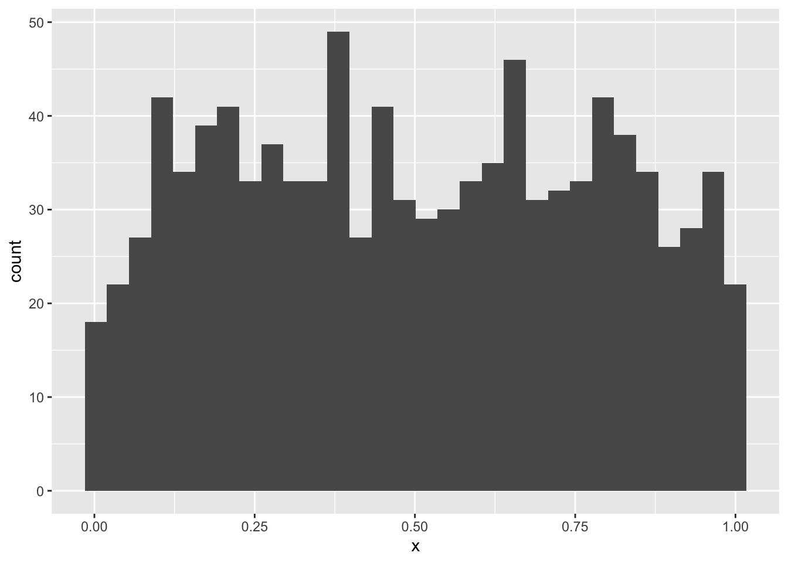
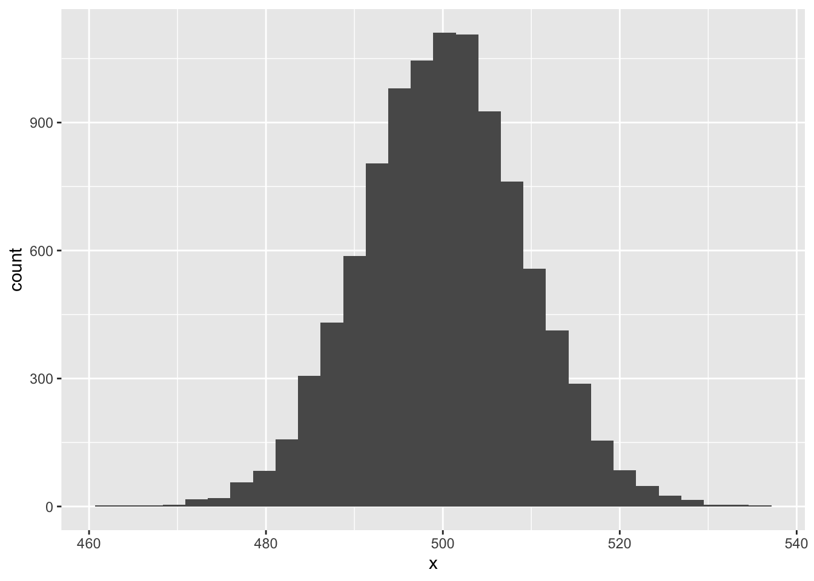

# a data.frame of 1000 random uniform numbers
unif_dat <- data.frame(x = runif(1000, 0, 1))
ggplot(unif_dat, aes(x)) +
geom_histogram()`stat_bin()` using `bins = 30`. Pick better value `binwidth`.
In this lab you will continue adding to the lab02-prob.qmd file that you downloaded and started working on in the last lab. Where you see section headers below, copy those section headers and use the appropriate number of ## hashtags to make them sections at the right depth. Where you see code below, copy it and put it into your own code chunk with appropriate labels and other chunk options.
So why is it that statistics so often assumes data are normally distributed? There is one decent reason: the Central Limit Theorem. This theorem explains why and under what circumstances data might (perhaps surprisingly) end up being normally distributed.
The theorem says this: if you take any kind of data, or random variables generally, and add them up, the distribution of that summation will be approximately normal. The approximation gets better and better the greater the number of random variables in the sum: if the sum is over three data points, the approximation is ok, if over 1,000 data points the approximation is great. If we had infinite data points the summation would be perfectly normally distributed, not even an approximation.
Why is this relevant? Two reasons:
We won’t dive into the math of this theorem, instead we’ll simulate it.
Let’s begin with something obviously not random: the so called “uniform” distribution. This is also one more distribution for us to learn about. In R we have dunif, punif, qunif, and runif just like other probability distribution functions. The uniform distribution takes parameters min and max and has perfectly equal probability density for all values in between. Let’s make a histogram of random uniform numbers between 0 and 1 to prove the point
# a data.frame of 1000 random uniform numbers
unif_dat <- data.frame(x = runif(1000, 0, 1))
ggplot(unif_dat, aes(x)) +
geom_histogram()`stat_bin()` using `bins = 30`. Pick better value `binwidth`.
The counts bounce around a little, but pretty much no one region is more probable than another. How could we get a normal distribution from that? If we sum up 1000 random uniform numbers and do that over and over again we will be able to plot a histogram of normal-looking random variables.
But how will we repeat something over and over? There are many ways in R, but we’ll learn one of the most fundamental ways: a for loop.
For loops let you repeat code as many times as you like. That can be very useful when simulating things. But let’s start with something simple to see how it works. Say we want to print out the result of 10 * 1, 10 * 2, …, up to 10 * 5. Writing or copy-pasting that would be boring. If going all the up to 10 * 100000000 it would be impossible. Here’s how a for loop helps us:
for(i in 1:5) {
print(10 * i)
}[1] 10
[1] 20
[1] 30
[1] 40
[1] 50The result is not surprising, but how we got there is worth unpacking. Inside the for loop we see the (indented) code print(10 * i). That’s the code that is getting run over and over again. But how does R know the value of i? With the for loop we are telling R to first assign i the 1 and run the code print(10 * i). Once done, the for loop tells R to come back to the beginning and assign i the value 2, and so on and so forth.
Printing the result is one thing, but we can’t work with the printed output because it’s not saved to an object. Let’s modify the for loop code to save the calculation to an object called times10:
# make an empty object to hold the output of the for loop
times10 <- numeric(length = 5)
for(i in 1:5) {
times10[i] <- 10 * i
}
times10[1] 10 20 30 40 50Now we can do things with the vector times10. But how did we make it? First we initialized an empty vector. Then inside the for loop instead of printing the multiplication result, we saved it to the \(i^{th}\) position in the times10 vector.
We now have the tools to run our Central Limit Theorem simulation
Let’s repeat for 10,000 times the experiment of summing up 1,000 uniform random variables.
# make an object to store the number of simulations
# we'll run
nsim <- 10000
# make a vector to hold to summations
rsum <- numeric(nsim)
# run the simulation
for(i in 1:nsim) {
rsum[i] <- sum(runif(1000, 0, 1))
}And now let’s visualize the output to see if it looks normal.
# make a data.frame out of the simulation results
sim_dat <- data.frame(x = rsum)
ggplot(sim_dat, aes(x)) +
geom_histogram()`stat_bin()` using `bins = 30`. Pick better value `binwidth`.
Pretty cool!
sampleNow you give it a try! But instead of runif let’s be even crazier and use the sample function. The function sample is a useful one to know: it can produce a random sample from just about any vector-like thing we give it. Let’s sample 20 numbers between 1 and 10, sum those, and see what their distribution is.
First check out how sample works:
sample(1:10, size = 20, replace = TRUE) [1] 2 1 1 7 5 6 5 3 4 9 3 10 10 4 9 8 5 3 7 5The replace = TRUE bit is important: that tells R to allow itself to re-sample the same number rather than draw 20 different numbers between 1 and 10 (which is impossible).
Now modify the for loop and ggplot code to see if the Central Limit Theorem applies here.
Diameter at breast height (DBH) might be a biological variable that results from many additive processes, and thus potentially be normally distributed. But it rarely if ever is. However, \(\log(\text{DBH})\) is quite often approximately normal, so what’s going on. Remember this rule about logarithms: \(\log(a \times b \times c) = \log(a) + \log(b) + \log(c)\). So if DBH results from many multiplicative processes, then log-transformed DBH might indeed have reason to be normally-distributed. Let’s assume that’s the case, at least for simulation purposes.
Suppose we want to simulate some data we’ve (hypothetically) sampled of DBH across an environmental gradient like rainfall, and suppose DBH positively responds to rainfall. Let’s simulate these data. Here’s what you need to know:
For simplicity, assume annual rainfall can be simulated as random numbers drawn from a uniform distribution with min = 1 and max = 50. Then, let’s assume the relationship between average log(DBH) and rainfall looks like this:
\[ \text{mean}\left(\log(\text{DBH}_{native}) \right) = 10 + 3 \times \text{(annual rainfall)} \]
But let’s make it a little more interesting too. Let’s suppose the above equation is the relationship for native taxa. For non-native taxa let’s assume the relationship is
\[ \text{mean}\left(\log(\text{DBH}_{non-native}) \right) = 6 + 5 \times \text{(annual rainfall)} \]
One last thing we’ll need to assume: let’s say the standard deviation of log(DBH) for all taxa is constant across rainfall and equal to 2.
Now simulate data for 40 native trees and 40 non-native trees, put it all in one data.frame and visualize it with ggplot.
From the last lab we know how to draw random numbers from a binomial distribution with rbinom. For the case of presence-absence data we need to set the size parameter of rbinom to 1. That will give us a random sample of 0’s and 1’s (absences and presences). But what about the prop parameter? We interpret it as probability of presence and we’re interested in how it changes, in this case, across an environmental gradient like, say, elevation.
In the case of simulating presence and absence across an environmental gradient like elevation we need to somehow scale that gradient into a number bound between 0 and 1 while also reflecting how the probability of presence changes across the gradient. Most often that is the job of the expit function:
\[ expit(z) = \frac{1}{1 + e^{-z}} \]
The output of this function will always be greater than 0 but less than 1. People also often think in terms of the inverse of this function: the logit. The logit scales a number, like a probability, bound between 0 and 1 into a number that has no bounds \((-\infty, \infty)\). The logit let’s us write a clean equation of how probability of presence changes acorss a gradient like elevation, for example
\[ logit(p) = -2 + 0.001 \times (\text{elevation}) \]
But for rbinom we don’t need \(logit(p)\), we need \(p\). We can get \(p\) by going back to the expit function (which solves the above equation).
\[ p = \frac{1}{1 + e^{-(-2 + 0.001 \times (\text{elevation}))}} \]
Let’s use that equation for our simulation purposes. But we need elevation: we can assume elevation comes from a uniform distribution with min = 0 and max = 5000.
Now simulate 50 presence/absence data points across elevation and visualize them with ggplot. Note: we don’t need to specify standard deviation or variance. Why?